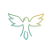
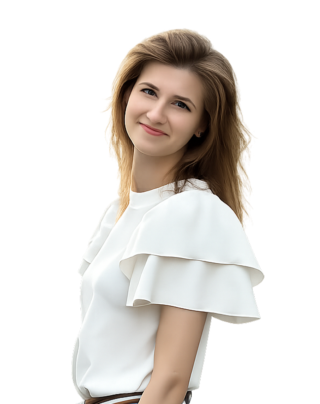
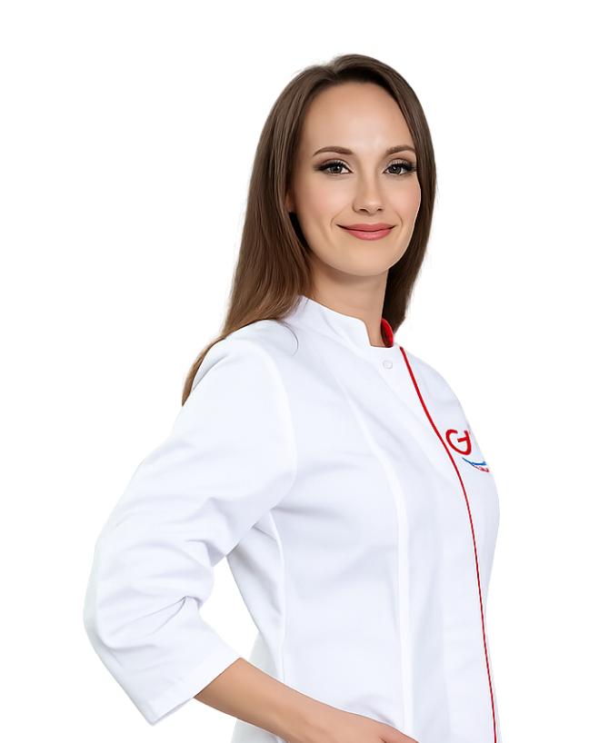
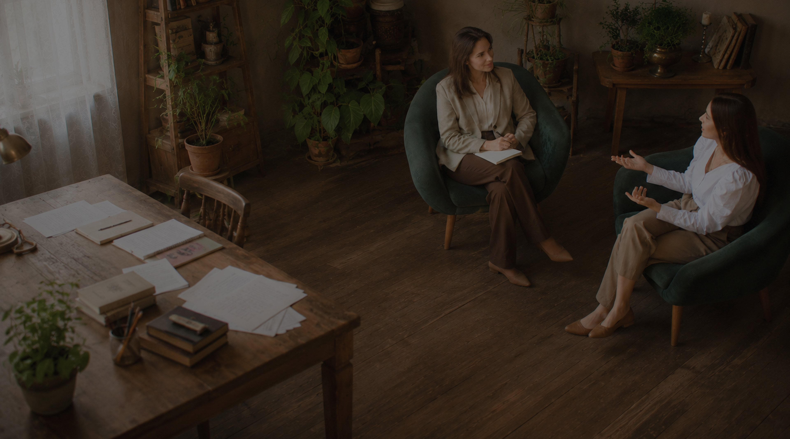
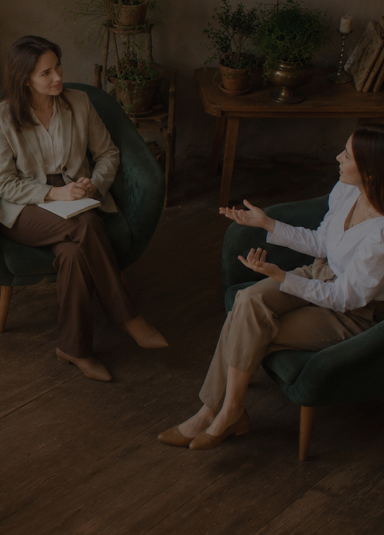

Твои крылья
Центр психологии:
путь к свободе, спокойствию и настоящим изменениям
Авторская программа центра объединяет профессиональную психологическую помощь, групповую поддержку и духовный рост
Мы помогаем не просто понять причину трудностей, а постепенно менять привычные сценарии — в отношениях, семье, самооценке, зависимости и внутреннем состоянии.
Пройти бесплатную диагностическую сессию
с психологом центра
Мы работаем в форматах:
Индивидуальная работа с психологом
Личный маршрут, задания и обратная связь от куратора
Групповая терапия
Поддержка людей с похожим опытом и работа с ведущими специалистами

Духовная опора
Бережное соединение психологии, смысла, веры и внутренней честности
Профессиональная команда
Специалисты с опытом, образованием и личной терапевтической практикой
Авторская программа центра
Пошаговая система изменений, а не разовые разговоры
С чем мы помогаем справиться
Зависимость
и созависимость
- Созависимые отношения
- Любовная зависимость
- Алкогольная зависимость
- Пищевые срывы, переедание, РПП
- Постоянная потребность спасать других
- Невозможность отпустить прошлое
- Контроль и гиперответственность
- Повторяющиеся болезненные сценарии в отношениях
Отношения
и семья
- Конфликты в семье
- Развод и расставание
- Измена и ревность
- Одиночество в отношениях
- Нарушение личных границ
- Созависимость с партнёром
- Сложные отношения с детьми
- Подростковый кризис
- Конфликты с ребёнком
- Чувство вины перед детьми
- Страх повторить ошибки родителей
- Сложные отношения с родителями
Эмоциональное
состояние
- Тревога и беспокойство
- Панические атаки
- Эмоциональное выгорание
- Чувство вины
- Обида и злость
- Страхи
- Потеря смысла жизни
- Подавленность
- Хроническая усталость
- Внутренняя пустота
- Трудности с проживанием чувств
Отношения
с собой
- Низкая самооценка
- Неуверенность в себе
- Самокритика
- Потеря себя
- Поиск предназначения
- Сложности с выбором
- Неумение говорить «нет»
- Отсутствие личных границ
- Самообесценивание
- Страх проявляться и быть собой
Наши программы по созависимости
Мы помогаем не просто понять причину трудностей, а постепенно менять привычные сценарии — в отношениях, семье, самооценке, зависимости и внутреннем состоянии.
Базовая программа
Базовая программа — для тех, кто готов последовательно двигаться к изменениям и хочет получать регулярную поддержку специалиста на этом пути
3 месяца
минимальная продолжительность
9-12 месяцев
средний темп прохождения
от 30 000 Р/мес
стоимость участия
Что входит в программу:
- Индивидуальная терапевтическая работа с психологом: построение маршрута под ваши цели
- Письменные задания, подробная обратная связь от куратора
-
Связь с куратором в Telegram: вторник – пятница (кроме гос.праздников), с 10:00 до 18:00
(МСК): голосовые, письменные ответы, задания, поддержка - 4 терапевтические группы в неделю, чтобы делиться наболевшим, задавать вопросы
- Комфортный темп прохождения: на выполнение задания отводится 3–4 дня
Кураторы программы

Якунина Александра
Стаж: 7 лет
Психолог, специалист по коррекции пищевого поведения

Юлия Соседко
Стаж: 10 лет
Психолог, специалист по созависимости

Якунина Александра
Стаж: 7 лет
Психолог, специалист по коррекции пищевого поведения
Роман Войтенков
Стаж: 7 лет
Клинический психолог, консультант по зависимому и созависимому поведению

Якунина Александра
Стаж: 7 лет
Психолог, специалист по коррекции пищевого поведения
Выгодные бонусы
Материалы для обучения
Доступ к материалам по саморегуляции, арт-терапии и работе с чувствами
Скидки
Скидка 30% на базовый тариф или 10% на тариф с куратором при переходе на другие программы Центра
Клуб и вебинары
Участие в клубе «Твои Крылья» — открытые группы, лекции и вебинары каждые 3–4 часа
Бесплатная консультация с быстрым результатом
Углубленная программа
Углублённая программа - для тех, кому важна максимально глубокая и индивидуализированная работа с опытным специалистом.
3 месяца
минимальная продолжительность
9-12 месяцев
средний темп прохождения
от 30 000 Р/мес
стоимость участия
Что входит в программу:
- Индивидуальная терапевтическая работа с психологом: построение маршрута под ваши цели
- Письменные задания, подробная обратная связь от куратора
- Связь с куратором в Telegram: вторник – пятница (кроме гос.праздников), с 10:00 до 18:00 (МСК): голосовые, письменные ответы, задания, поддержка
- 4 терапевтические группы в неделю, чтобы делиться наболевшим, задавать вопросы
- Комфортный темп прохождения: на выполнение задания отводится 3–4 дня


Специалисты центра «Твои Крылья» проводят онлайн-консультации на платформе «Вместе»
Это удобный формат видеовстречи с психологом, если вам нужна личная поддержка, взгляд специалиста на ситуацию или бережный первый шаг перед терапевтической программой.
Специалисты нашей команды работают в разых подходах: гештальт, когнитивно-поведенческая терапия, арт-терапия, системное консультирование, зависимое/созависимое консультирование, духовно-ориентированный подход
Парная
консультация
Для личных запросов, тревоги, самооценки, отношений, кризисов
Консультация по детско-
родительским отношениям
С детьми и родителями. Для родителей, которым нужна помощь в понимании ребёнка и семейной динамики
Индивидуальная
консультация
Для личных запросов, тревоги, самооценки, отношений, кризисов
от 45 минут
Продолжительность консультации
15 спициалистов
В нашей команде, работающих в разных подходах
от 2300 Р
Стоимость консультации
Ваш путь к счастливой жизни
Заявка на диагностику и
диагностичессая сессия
Рекомендации
от специалиста
Подбор программы терапии
Старт терапии.
Поддержка и клуб
Оставьте заявку и мы бесплатно проконсультируем вас. Конфиденциально и без обязательств
Психологи центра
Якунина Александра
Стаж: 7 лет
Ведущий психолог центра
Юлия Соседко
Стаж: 10 лет
Ведущий психолог центра
Якунина Александра
Стаж: 7 лет
Ведущий психолог центра
Роман Войтенков
Стаж: 7 лет
Ведущий психолог центра
Якунина Александра
Стаж: 7 лет
Ведущий психолог центра
Ответы на вопросы
Как проходит терапия?
Ваш путь в Центре начинается с диагностической сессии — 30-минутной онлайн-встречи с психологом. Психолог проясняет ваш запрос, проводит диагностику текущего состояния и предлагает индивидуальный маршрут. Вы понимаете подходит ли вам такой формат, сколько времени и ресурсов потребуется, кто станет вашим куратором.
Как всё устроено дальше:
1. Выбор курса и куратора.
В Центре два тарифа: Базовый или Углублённый. Они отличаются глубиной программы и количеством
тем, которые разбираются в ходе работы. С клиентами работают 5 психологов: Юлия Аверьянова или
Антон Зинькевич (Углубленный тариф), Максим Курлыков, Роман Войтенков, Юлия Соседко (Базовый).
2. Старт работы.
Вы знакомитесь с куратором-психологом.
Он будет на связи 4 дня в неделю (вт–пт, 10:00–18:00 МСК).
Общение — в Telegram: голосовые, текстовые, практики.
3. Еженедельная терапия
Каждую неделю вы выполняете задания, получаете подробную обратную связь психолога, участвуете в
группах.
Куратор помогает пройти сложные этапы — шаг за шагом.
4. Поддержка сообщества
Вы попадаете в сообщество людей, которые тоже идут путём изменений.
Групповые встречи в Telegram проходят 7 дней в неделю 3-4 раза в день. Вы можете выбрать те,
которые подходят под ваш график и запросы.
5. Клуб выпускников
После окончания терапии, вы получете возмодность попасть в клуб “Твои Крылья”, где собираются
выпускники и участники наших. программ.

Продолжительность терапии
— от 3 до 12 месяцев
Стоимость участия —
от 30 000 ₽ в месяц.
Работа в комфортном темпе,
с гарантией результата.
Можно ли совмещать программу и другие курсы?
Ваш путь в Центре начинается с диагностической сессии — 30-минутной онлайн-встречи с психологом. Психолог проясняет ваш запрос, проводит диагностику текущего состояния и предлагает индивидуальный маршрут. Вы понимаете подходит ли вам такой формат, сколько времени и ресурсов потребуется, кто станет вашим куратором.
Как всё устроено дальше:
1. Выбор курса и куратора.
В Центре два тарифа: Базовый или Углублённый. Они отличаются глубиной программы и количеством
тем, которые разбираются в ходе работы. С клиентами работают 5 психологов: Юлия Аверьянова или
Антон Зинькевич (Углубленный тариф), Максим Курлыков, Роман Войтенков, Юлия Соседко (Базовый).
2. Старт работы.
Вы знакомитесь с куратором-психологом.
Он будет на связи 4 дня в неделю (вт–пт, 10:00–18:00 МСК).
Общение — в Telegram: голосовые, текстовые, практики.
3. Еженедельная терапия
Каждую неделю вы выполняете задания, получаете подробную обратную связь психолога, участвуете в
группах.
Куратор помогает пройти сложные этапы — шаг за шагом.
4. Поддержка сообщества
Вы попадаете в сообщество людей, которые тоже идут путём изменений.
Групповые встречи в Telegram проходят 7 дней в неделю 3-4 раза в день. Вы можете выбрать те,
которые подходят под ваш график и запросы.
5. Клуб выпускников
После окончания терапии, вы получете возмодность попасть в клуб “Твои Крылья”, где собираются
выпускники и участники наших. программ.
Продолжительность терапии — от 3 до 12 месяцев
Стоимость участия — от 30 000 ₽ в месяц.
Работа в комфортном темпе, с гарантией результата.
Сколько времени требуется для достижения первых результатов?
Ваш путь в Центре начинается с диагностической сессии — 30-минутной онлайн-встречи с психологом. Психолог проясняет ваш запрос, проводит диагностику текущего состояния и предлагает индивидуальный маршрут. Вы понимаете подходит ли вам такой формат, сколько времени и ресурсов потребуется, кто станет вашим куратором.
Как всё устроено дальше:
1. Выбор курса и куратора.
В Центре два тарифа: Базовый или Углублённый. Они отличаются глубиной программы и количеством
тем, которые разбираются в ходе работы. С клиентами работают 5 психологов: Юлия Аверьянова или
Антон Зинькевич (Углубленный тариф), Максим Курлыков, Роман Войтенков, Юлия Соседко (Базовый).
2. Старт работы.
Вы знакомитесь с куратором-психологом.
Он будет на связи 4 дня в неделю (вт–пт, 10:00–18:00 МСК).
Общение — в Telegram: голосовые, текстовые, практики.
3. Еженедельная терапия
Каждую неделю вы выполняете задания, получаете подробную обратную связь психолога, участвуете в
группах.
Куратор помогает пройти сложные этапы — шаг за шагом.
4. Поддержка сообщества
Вы попадаете в сообщество людей, которые тоже идут путём изменений.
Групповые встречи в Telegram проходят 7 дней в неделю 3-4 раза в день. Вы можете выбрать те,
которые подходят под ваш график и запросы.
5. Клуб выпускников
После окончания терапии, вы получете возмодность попасть в клуб “Твои Крылья”, где собираются
выпускники и участники наших. программ.
Продолжительность терапии — от 3 до 12 месяцев
Стоимость участия — от 30 000 ₽ в месяц.
Работа в комфортном темпе, с гарантией результата.
Как выбрать формат?
Ваш путь в Центре начинается с диагностической сессии — 30-минутной онлайн-встречи с психологом. Психолог проясняет ваш запрос, проводит диагностику текущего состояния и предлагает индивидуальный маршрут. Вы понимаете подходит ли вам такой формат, сколько времени и ресурсов потребуется, кто станет вашим куратором.
Как всё устроено дальше:
1. Выбор курса и куратора.
В Центре два тарифа: Базовый или Углублённый. Они отличаются глубиной программы и количеством
тем, которые разбираются в ходе работы. С клиентами работают 5 психологов: Юлия Аверьянова или
Антон Зинькевич (Углубленный тариф), Максим Курлыков, Роман Войтенков, Юлия Соседко (Базовый).
2. Старт работы.
Вы знакомитесь с куратором-психологом.
Он будет на связи 4 дня в неделю (вт–пт, 10:00–18:00 МСК).
Общение — в Telegram: голосовые, текстовые, практики.
3. Еженедельная терапия
Каждую неделю вы выполняете задания, получаете подробную обратную связь психолога, участвуете в
группах.
Куратор помогает пройти сложные этапы — шаг за шагом.
4. Поддержка сообщества
Вы попадаете в сообщество людей, которые тоже идут путём изменений.
Групповые встречи в Telegram проходят 7 дней в неделю 3-4 раза в день. Вы можете выбрать те,
которые подходят под ваш график и запросы.
5. Клуб выпускников
После окончания терапии, вы получете возмодность попасть в клуб “Твои Крылья”, где собираются
выпускники и участники наших. программ.
Продолжительность терапии — от 3 до 12 месяцев
Стоимость участия — от 30 000 ₽ в месяц.
Работа в комфортном темпе, с гарантией результата.
Конфиденциальность
Ваш путь в Центре начинается с диагностической сессии — 30-минутной онлайн-встречи с психологом. Психолог проясняет ваш запрос, проводит диагностику текущего состояния и предлагает индивидуальный маршрут. Вы понимаете подходит ли вам такой формат, сколько времени и ресурсов потребуется, кто станет вашим куратором.
Как всё устроено дальше:
1. Выбор курса и куратора.
В Центре два тарифа: Базовый или Углублённый. Они отличаются глубиной программы и количеством
тем, которые разбираются в ходе работы. С клиентами работают 5 психологов: Юлия Аверьянова или
Антон Зинькевич (Углубленный тариф), Максим Курлыков, Роман Войтенков, Юлия Соседко (Базовый).
2. Старт работы.
Вы знакомитесь с куратором-психологом.
Он будет на связи 4 дня в неделю (вт–пт, 10:00–18:00 МСК).
Общение — в Telegram: голосовые, текстовые, практики.
3. Еженедельная терапия
Каждую неделю вы выполняете задания, получаете подробную обратную связь психолога, участвуете в
группах.
Куратор помогает пройти сложные этапы — шаг за шагом.
4. Поддержка сообщества
Вы попадаете в сообщество людей, которые тоже идут путём изменений.
Групповые встречи в Telegram проходят 7 дней в неделю 3-4 раза в день. Вы можете выбрать те,
которые подходят под ваш график и запросы.
5. Клуб выпускников
После окончания терапии, вы получете возмодность попасть в клуб “Твои Крылья”, где собираются
выпускники и участники наших. программ.
Продолжительность терапии — от 3 до 12 месяцев
Стоимость участия — от 30 000 ₽ в месяц.
Работа в комфортном темпе, с гарантией результата.